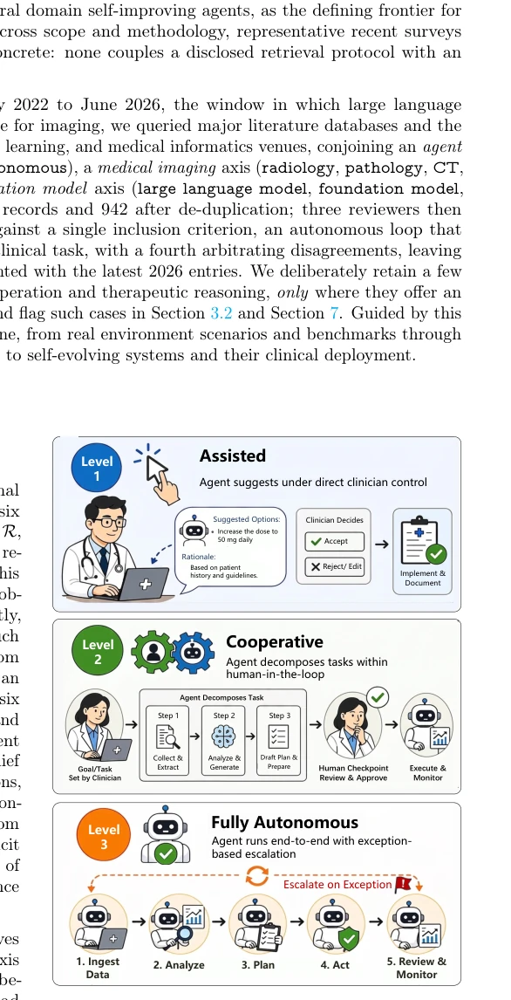
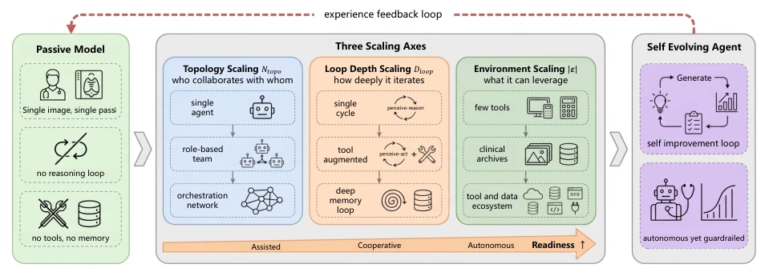
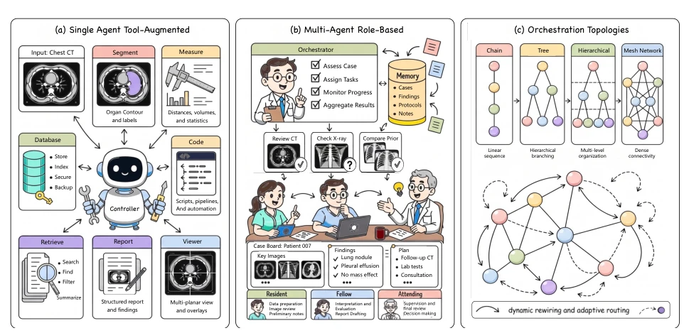
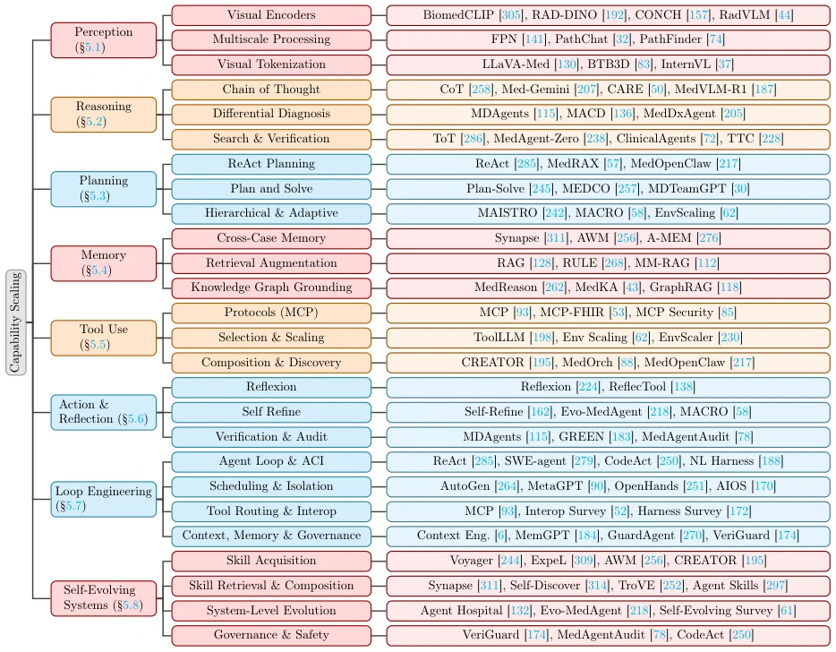
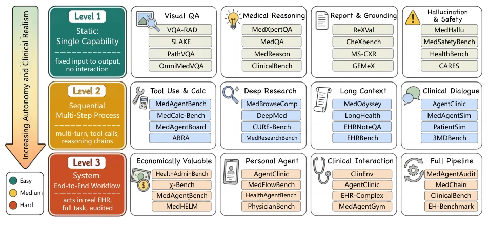
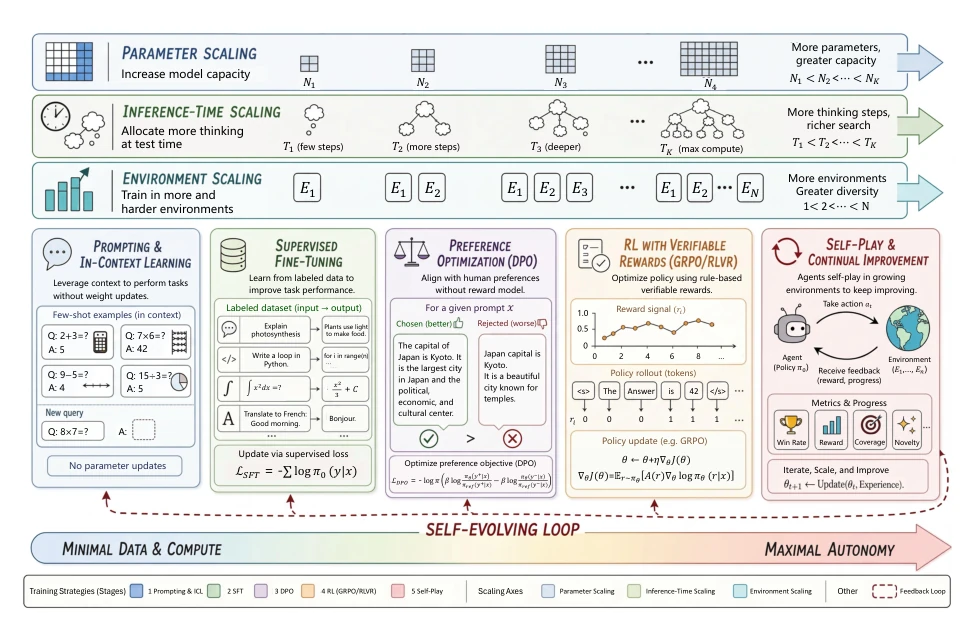
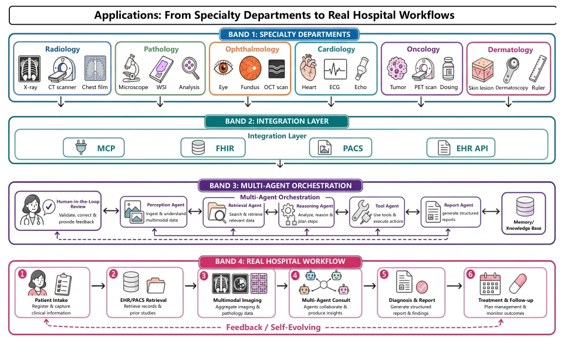
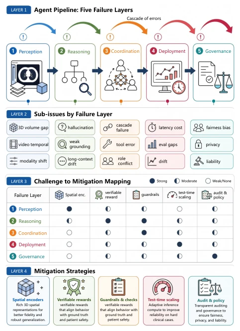
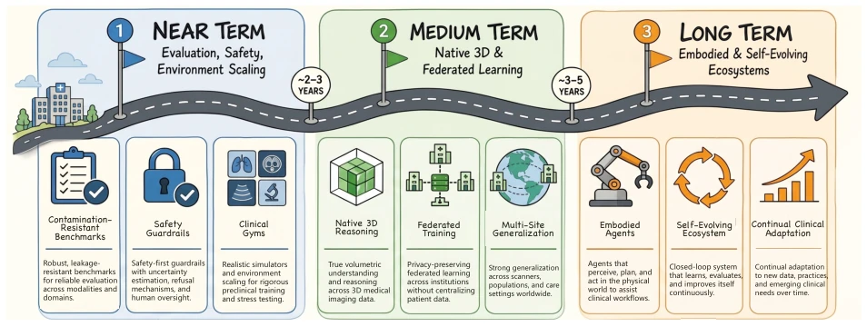

The Path to Self-Evolving Clinical Systems: Scaling Medical Agents from Assistance to Autonomy
Chunzheng Zhu, Lei Tian, Bohan Tan, Ziqi Zhou, Yuxuan Sun, Yijun Wang abspdf
论文点评Review
这篇 2026 年的综述试图给医疗 AI 画一张“进化路线图”，把被动模型强行升级为自主代理。亮点在于提出了“Scaling Spine”概念，不再死磕参数规模，而是强调框架、能力和环境三个维度的协同扩展，这点比单纯堆算力务实。但毒舌一下，作为一篇综述，它提出的“自进化”目标目前更像画饼，Level 3 完全自主在临床几乎不存在，谈自进化略显超前。且文中大量引用 2025-2026 年的文献，对于当前读者而言，更像是一份“未来预言”而非“现状总结”。缺乏实证数据验证其框架的实际增益，更像是一张精美的概念图。
This 2026 review attempts to draw an "evolution roadmap" for medical AI, forcibly upgrading passive models to autonomous agents. The highlight lies in proposing the "Scaling Spine" concept, no longer obsessing over parameter scale, but emphasizing the synergistic expansion of three dimensions: framework, capability, and environment, which is more pragmatic than simply stacking computing power. However, to be blunt, as a review, its proposed "self-evolution" goal currently seems more like a pie in the sky; Level 3 full autonomy hardly exists in clinical settings, making talk of self-evolution slightly premature. Moreover, the text heavily cites literature from 2025-2026, which for current readers resembles more of a "future prophecy" than a "status summary". Lacking empirical data to verify the actual gains of its framework, it resembles more of a beautiful conceptual diagram.
研究动机Motivation
现有医疗 AI 多为静态模型，缺乏迭代推理和工具调用能力，无法适应复杂临床环境 [157, 161, 305]。现有综述多按认知模块分类，忽视真实部署场景的约束 [246, 298]。医疗场景需要处理 PACS、EHR 等多源数据，且要求可解释性和安全性。当前基准测试多停留在静态问答，无法评估多轮交互、工具调用及长程工作流能力。因此，需要一种以真实环境为出发点的组织原则，明确自主性分级和评估标准，推动从辅助到自主的跨越。
Existing medical AI are mostly static models, lacking iterative reasoning and tool calling capabilities, unable to adapt to complex clinical environments [157, 161, 305]. Existing reviews are mostly classified by cognitive modules, ignoring constraints of real deployment scenarios [246, 298]. Medical scenarios require processing multi-source data such as PACS, EHR, and demand interpretability and safety. Current benchmarks mostly stay at static Q&A, unable to evaluate multi-turn interaction, tool calling, and long-horizon workflow capabilities. Therefore, an organizational principle starting from real environments is needed, clarifying autonomy levels and evaluation standards, to promote the leap from assistance to autonomy.

Figure 1 Three-level autonomy taxonomy for medical agents. Level 1 (Assisted): the agent suggests under direct clinician control. Level 2 (Cooperative): it decomposes tasks and invokes tools within a human-in-the-loop framework. Level 3 (Fully Autonomous): it runs end-to-end workflows with exception-based human escalation.

Figure 2 The scaling spine carries a passive single pass model to a self-evolving medical agent along three orthogonal axes. A passive foundation model (left) reads a single image in one forward pass with no reasoning loop, no tools, and no memory. Three complementary scaling axes then lift it toward autonomy: framework scaling Ntopo enriches who collaborates with whom (single agent, role based team, orchestration network); capability scaling Dloop deepens how far it iterates (single perceive-reason cycle, tool augmented perceive-act, deep memory loop); and environment scaling |E| widens what tools and data it can leverage (few tools, clinical archives, a full tool and data ecosystem). Readiness rises from assisted through cooperative to autonomous as the three axes advance together, where
The core proposes the "Scaling Spine" architecture, defining medical agents as six modules: perception, reasoning, planning, memory, tool, action reflection, operating under partial observability. Autonomy is divided into three levels: Assistance (Level 1, doctor control), Collaboration (Level 2, human-machine collaboration), Full Autonomy (Level 3, exception escalation). Capabilities are expanded through three axes: Framework expansion (topology, from single agent to role teams to orchestration networks), Capability expansion (cognitive loop depth, through engineering perception-reasoning-planning-action-reflection loops, rather than simply enlarging models), Environment expansion (tool and data ecosystem, connecting PACS, EHR, etc.). Emphasizes that environment expansion is the key lever to improve readiness, because clinical environments themselves are rich in tools. Proposes "Clinical Gym" as a training environment, supporting self-evolution, utilizing general domain experiences such as self-improving agents. Evaluation system is divided into three-level benchmarks, from static capabilities to end-to-end workflows, covering reasoning quality, efficiency, robustness, user experience, and safety.

Figure 4 Three stages of architectural scaling for medical agents, ordered by where coordination is decided. (a) Single agent tool augmented: one controller decides everything and calls an external tool repertoire. (b) Multi agent role based: coordination is fixed at design time through specialized roles under an orchestrator that mirrors clinical division of labor. (c) Orchestration topologies: coordination itself becomes a learnable, query adaptive object. Two cross cutting design choices recur across all stages, namely whether actions are tool calls or executable code, and whether the system is static or revises itself from experience.

Figure 5 Taxonomy of the capability scaling stack. Six cognitive modules realize the agent’s intelligence as stations on the loop; loop engineering binds them into an autonomous execution cycle; and the self-evolving systems layer shows how compounding experience across patients turns a static pipeline into one that keeps improving.
This paper has no traditional model training experiments, but conducts a systematic review of 300+ literature. Organized a three-level benchmark system (Level 1-3), covering from static capabilities to end-to-end workflows. Analyzed benchmarks from 2022-2026 such as AgentClinic, MedAgentBench, etc. Points out that current systems are mostly Level 1 capabilities, Level 3 is still lacking. Evaluation dimensions include reasoning quality, efficiency, robustness, etc. By comparing the coverage of different benchmarks, it reveals the gap from static Q&A to real clinical workflows. Specifically focused on new benchmarks from 2026 such as ABRA and AutoMedBench, demonstrating improvements in tool calling and long-context capabilities.

Figure 3 Benchmark taxonomy for medical agent evaluation. We organize representative benchmarks along three levels of increasing autonomy and clinical realism: Level 1 (static, single-capability) tests isolated perception and reasoning under clean inputs; Level 2 (sequential, multi-step) requires tool invocation, evidence retrieval, long-context reasoning, and sustained clinical dialogue; Level 3 (system, end-to-end workflow) demands autonomous operation inside real or simulated EHR environments with full-pipeline auditing.
其他图片Other Figures

Figure 6 Training time strategy spectrum and scaling axes for medical agents. The horizontal axis traces a supervision reducing and autonomy increasing ladder of five stages, from prompting and in context learning, through supervised fine tuning and preference optimization, to reinforcement learning with verifiable rewards and self-play with continual improvement. Three orthogonal axes, parameter, inference time, and environment scaling, amplify capability along complementary dimensions, and the dashed path denotes the self-evolving loop in which an agent reuses its own outcomes as supervision.

Figure 7 Representative medical agents organized from specialty departments, through a shared protocol and orchestra- tion layer, into an end to end hospital workflow with a self-evolving feedback loop.

Figure 8 Open challenges for medical agents. Four layers: pipeline failure loci, sub-challenges, mitigation coverage, and representative strategies.

Figure 9 Future roadmap for medical agents. Three horizons spanning near term evaluation and safety, medium term native 3D and federated learning, and long term embodied and self-evolving systems.